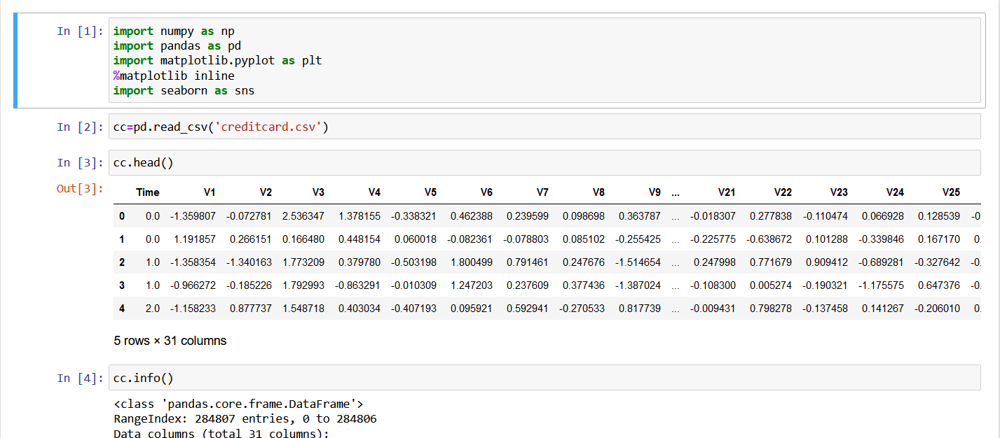
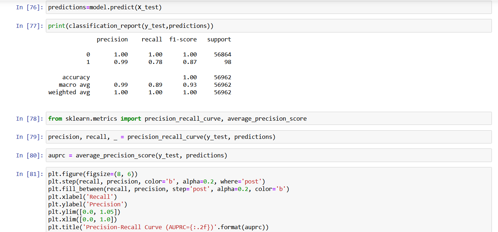

Description: A machine learning model to identify fraudulent credit card transactions.
Skills: Python,pandas,numpy,matplotlib,seaborn,machine learning models like random forest classifier
  Have a look at my projectDescription: A hand gesture-controlled car involves combining hardware components, such as a camera or sensor for gesture recognition, with software to interpret the gestures and control the car.
Skills: C++,arduino uno and knowledge about various electrical components.
Description: Sales prediction involves forecasting the amount of a product that customers will purchase, taking into account various factors such as advertising expenditure, target audience segmentation, and advertising platform selection
Skills: Python,pandas,numpy,matplotlib,seaborn,machine learning models like logistic regression,linear regression
Have a look at my projectDescription: I used the Titanic dataset to build a model that predicts whether a passenger on the Titanic survived or not.
Skills: Python,pandas,numpy,matplotlib,seaborn,machine learning models like logistic regression,linear regression
Have a look at my project